Шесть ИИ-агентов, которые работают вместо тебя. Честное сравнение
Три агента живут в чужом облаке: OpenAI Dots, Meta Muse и Grok Bot от xAI. Три бесплатные, с открытым кодом, ставятся к тебе: OpenClaw, Hermes и MausBot, причём последний вообще не агент, а руководитель над агентами. Что умеет каждый, сколько стоит, куда он полезет в твоих данных и с какого начать
Катерина Арта · @katerinarta_ · октябрь 2026
Чем агент отличается от чата
Чат отвечает, пока ты с ним разговариваешь. Агент получает задачу, заходит в твои сервисы и продолжает работать, когда вкладка уже закрыта
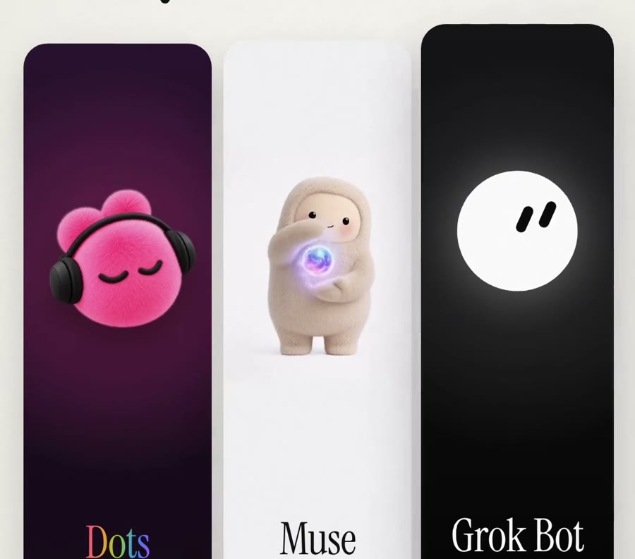
С виду три одинаковых милых персонажа. Внутри три разные работы
У трёх облачных агентов есть своё рабочее место на чужом сервере: компьютер с браузером, где агент открывает сайты и приложения, как человек. Три открытых ставятся на твой компьютер или сервер, и за модель платишь отдельно
Dotsведёт твою рабочую задачу внутри ChatGPT
Museзакрывает личные дела: покупки, брони, анкеты
Grok Botсобирает команду ботов, у каждого своя роль
OpenClawпомощник, которому пишешь в мессенджер, как знакомому
Hermesагент, который учится и сам пишет себе навыки
MausBotруководитель, который собирает твоих агентов в одну команду
Агент 1 · OpenAI
Dots: сотрудник, который не уходит домой
Вышел 29 сентября 2026. Живёт внутри ChatGPT, работает на модели GPT-6 Astra. Ставишь ему цель, например «держи запуск по плану», подключаешь приложения (их больше 4 000), и он сам продолжает работу между разговорами: собирает информацию, готовит письма, документы и посты, обновляет предложения
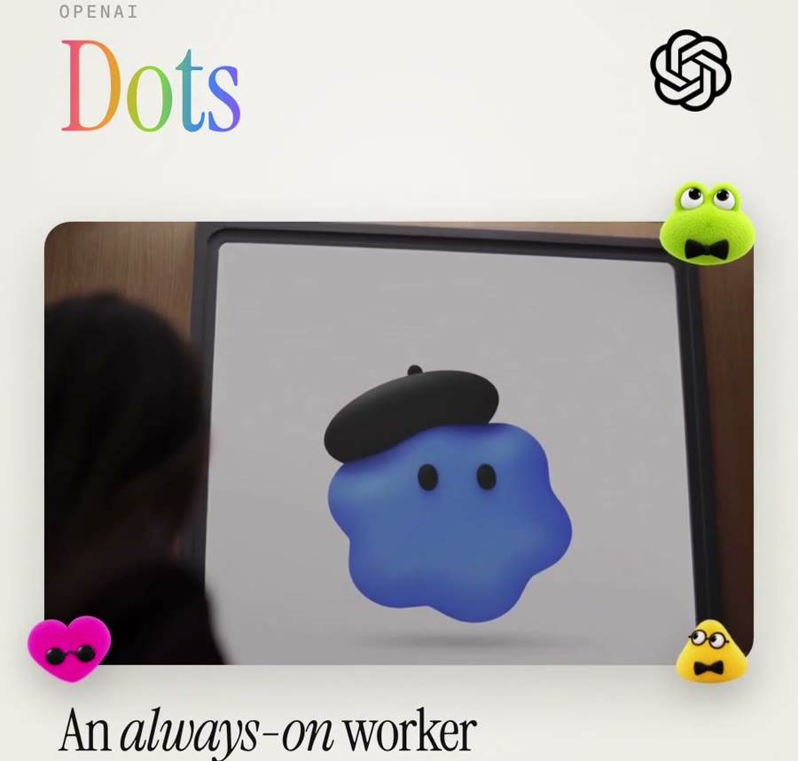
Dots - агент OpenAI, который работает всегда
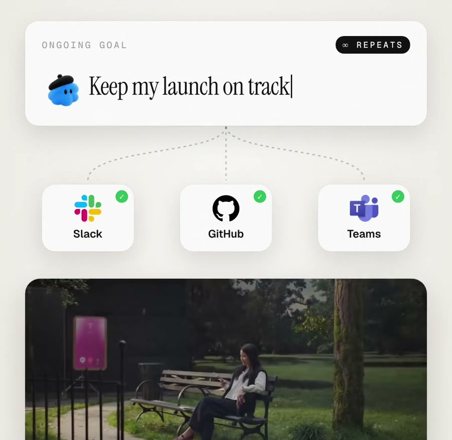
Цель «держи запуск по плану», подключены Slack, GitHub и Teams
Сколько стоитНет в бесплатном, Go и Plus за $20. Самый дешёвый вход: Pro 100 за $100 в месяц, первый агент включён. Бизнес-тариф Business Premium: $125 за место
ДанныеЗабирает память из ChatGPT и копит свою из подключённых приложений. Посмотреть или стереть отдельное воспоминание нельзя, только удалить агента целиком
Где сильныйЛучшая модель из трёх и отдельный проверяющий: перед каждым действием сверяет его с твоими правилами. Деньги, пароли, удаление и покупки картой без тебя не делает
Где слабыйАгент личный, одну задачу на команду не разделить. Дополнительных агентов пока купить нельзя, цену не объявили. На тарифе Pro не работает в ЕС, Великобритании и Швейцарии
Агент 2 · Meta
Muse: личный помощник по быту
Вышел в начале сентября 2026. Работает в приложении, в браузере и в WhatsApp. Отправляет письма, заполняет формы, бронирует перелёты и отели, снижает счета и покупает. Авиабилеты берёт напрямую больше чем у 500 авиакомпаний, отели ищет на сайтах бронирования сам, как человек
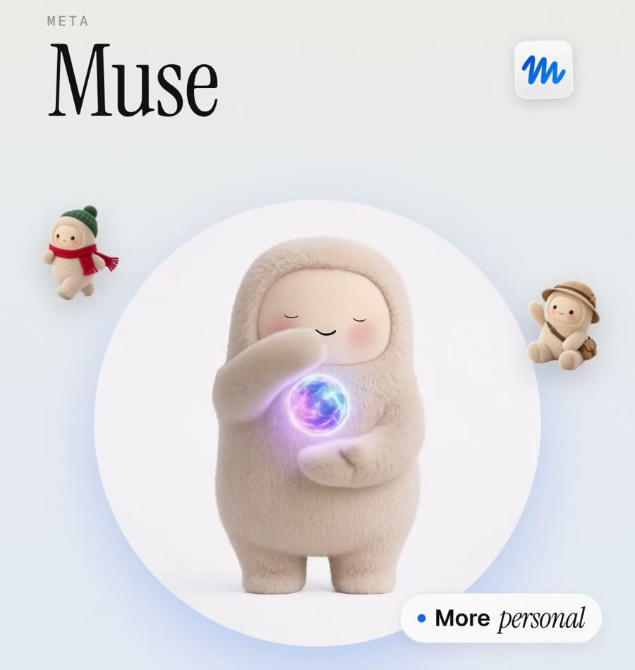
Muse - личный помощник от Meta
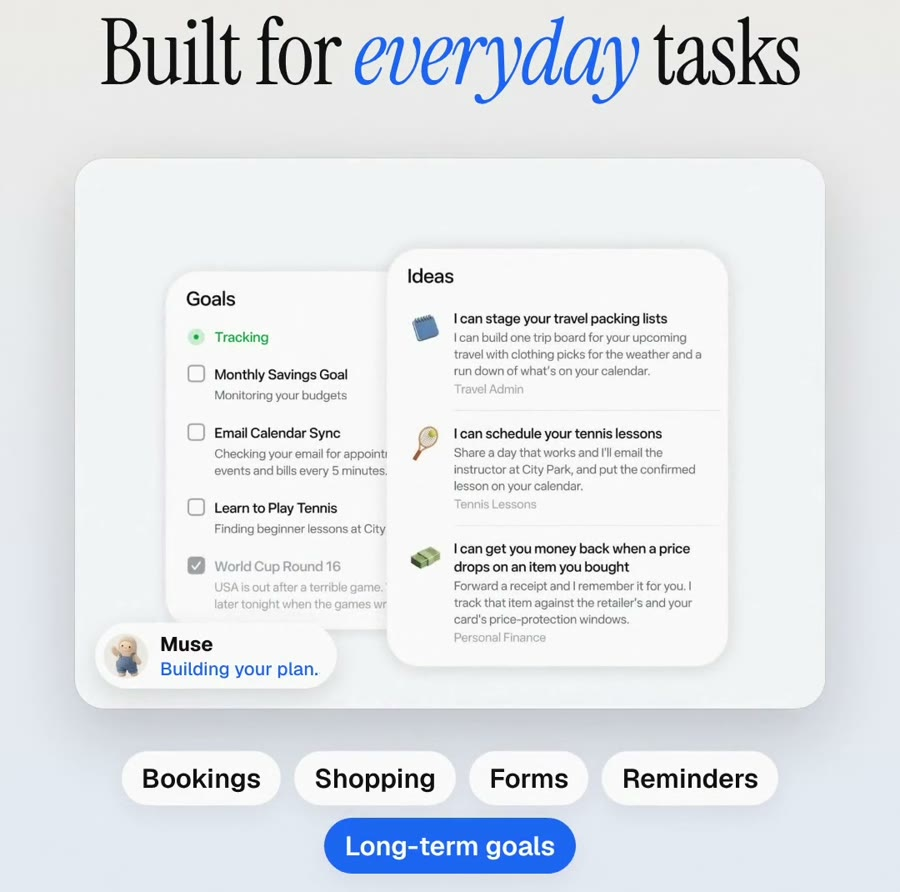
Брони, покупки, анкеты, напоминания и долгие цели в одном окне
Сколько стоитБесплатно для большинства. Платные тарифы: Power за $20 и Maximum за $100 в месяц. Meta зарабатывает комиссией с покупок, которые делает агент
ДанныеЧтобы работать хорошо, просит много: почту, календарь, платежи, здоровье. Журналисты WIRED заметили, что он постоянно предлагает дать ещё доступов. Meta обещает не передавать переписку в рекламу, обучение можно отключить
Где сильныйПокупки через одноразовую карту: сайт не видит твоих настоящих данных. Отдельный сторож проверяет всё, что агент отправляет в интернет
Где слабыйПока только в США. Был скандал: пользователь сообщил, что Muse выгрузил 187 000 строк личных сообщений без разрешения. Amazon закрыл ему доступ к своему магазину
Агент 3 · xAI
Grok Bot: отдел из ботов
Ранний доступ открыли 11 августа 2026, командные боты вышли 28 сентября. Здесь ты не один агент настраиваешь, а собираешь штат: каждому боту роль, свои инструменты и память. Готовые роли: продажи, поиск кандидатов, реклама, расходы, аналитика продукта, руководитель аппарата и другие
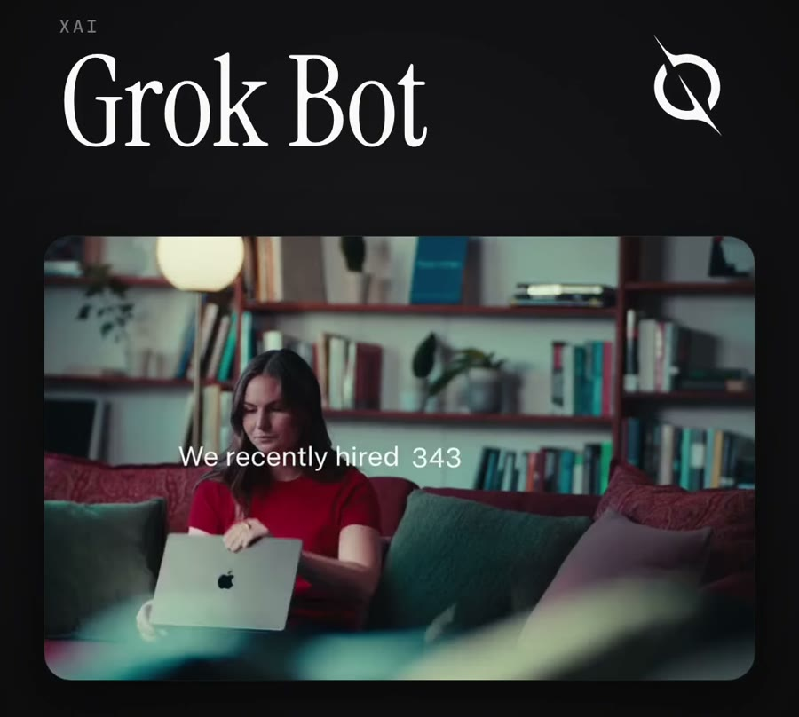
Grok Bot - ИИ-коллеги от компании Илона Маска
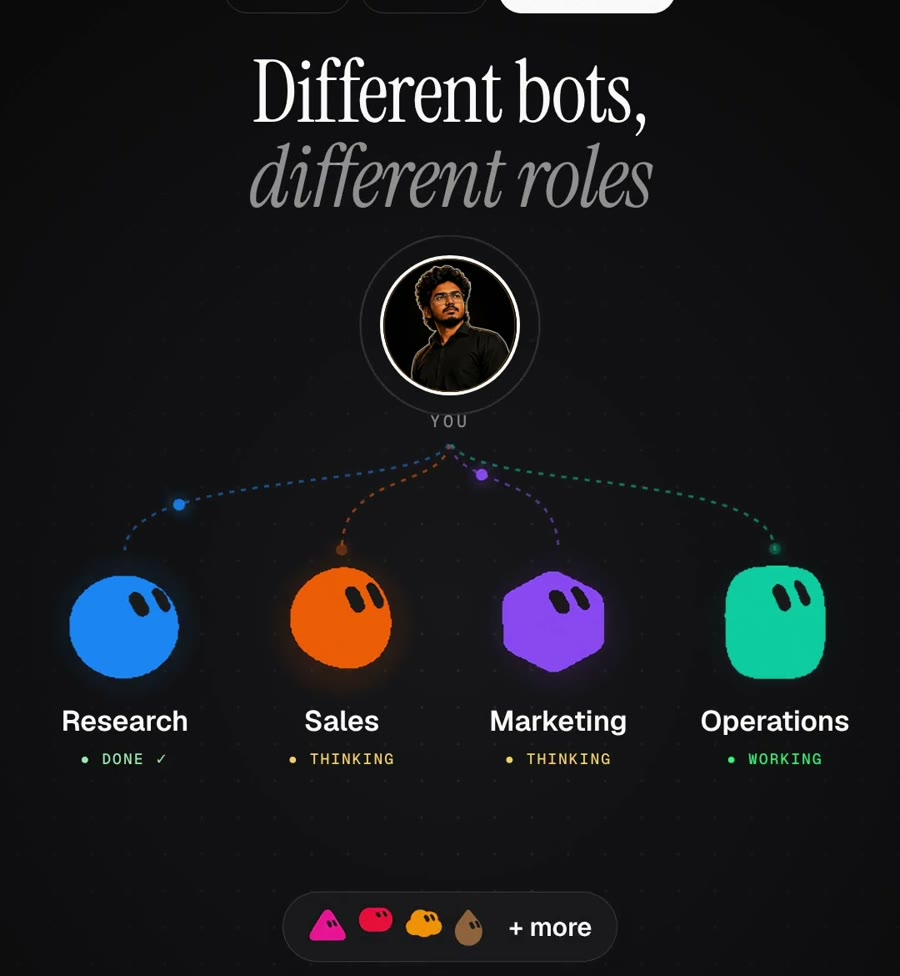
Каждому боту своя роль: поиск, продажи, маркетинг, операционка
Сколько стоитНа старте входил в SuperGrok Heavy за $300 в месяц и в тарифы Cursor от $120 до $200. Сейчас доступ расширили на обычную подписку SuperGrok и на Cursor Pro от $20
ДанныеПароли бот не хранит: вход в сервис делаешь ты, а он работает в открытой сессии. Но все боты сидят на одном компьютере, и файлы и входы одного видны остальным
Где сильныйРаботает даже с программами, у которых нет никаких подключений для ИИ: просто кликает в интерфейсе. Боты умеют передавать задачи друг другу
Где слабыйНет тестового режима: проба сразу делает настоящую работу, а подтверждение не отменяет то, что уже сделано. Журнал действий только обещают
Агент 4 · открытый код
OpenClaw: помощник в твоём мессенджере
Бесплатная программа с открытым кодом (лицензия MIT). Ставится один раз на компьютер или сервер и дальше работает в фоне: сам просыпается по расписанию и проверяет, нет ли дел. Пишешь ему в WhatsApp, Telegram, Slack, iMessage и ещё два десятка мессенджеров, как обычному контакту. Умеет управлять браузером, выполнять команды на компьютере, вести почту, календарь и файлы
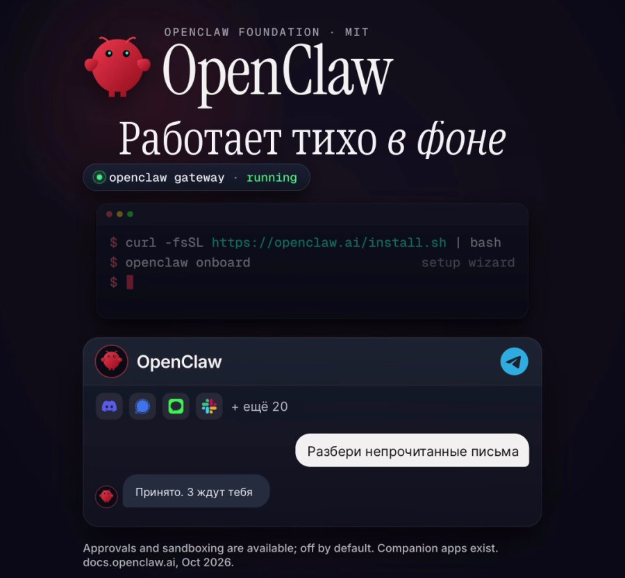
OpenClaw работает в фоне, а пишешь ты ему из мессенджера
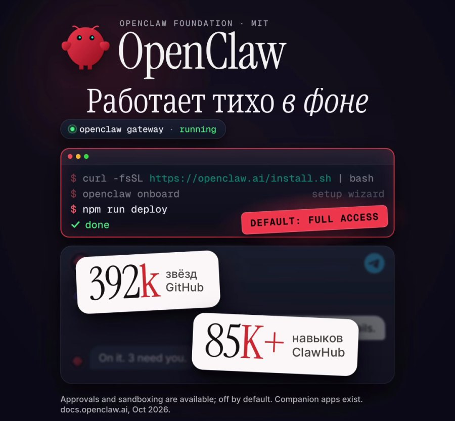
Самое большое сообщество и десятки тысяч готовых навыков
Сколько стоитСама программа бесплатная. Платишь за модель и хостинг, в среднем $30-60 в месяц
ДанныеЖивут у тебя на компьютере или сервере. Но агент получает доступ к системе, браузеру и почте, поэтому за безопасность отвечаешь ты сам
Где сильныйСамое большое сообщество. В каталоге навыков ClawHub десятки тысяч готовых умений (в августе 2026 было больше 67 000), каждое ставится одной командой
Где слабыйНавыки в каталог выкладывает кто угодно, без проверки кода. Исследователи нашли больше 900 заражённых навыков. По умолчанию агент выполняет команды, не спрашивая тебя. Нужно уметь настроить
Агент 5 · Nous Research
Hermes: агент, который учится
Вышел в феврале 2026, бесплатный, с открытым кодом (лицензия MIT). Есть приложение для macOS, Windows и Linux и версия для терминала, писать ему можно из Telegram, Discord, Slack и WhatsApp. Создаёшь ботов, у каждого своя роль, модель и память, и они общаются в общем чате. Главная фишка: после каждой задачи он сам записывает себе новый навык и потом его улучшает
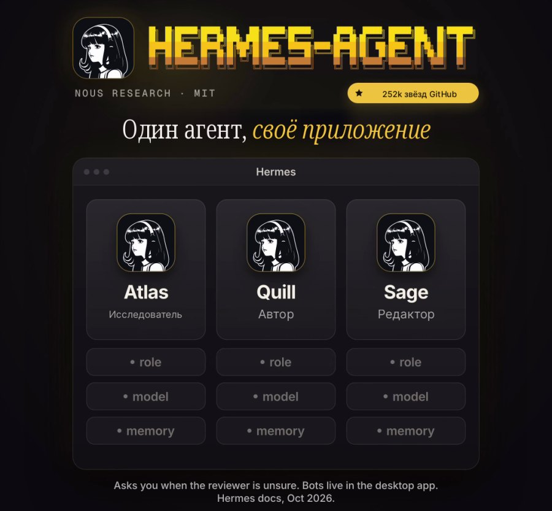
Hermes: один агент со своим приложением и ботами под роли
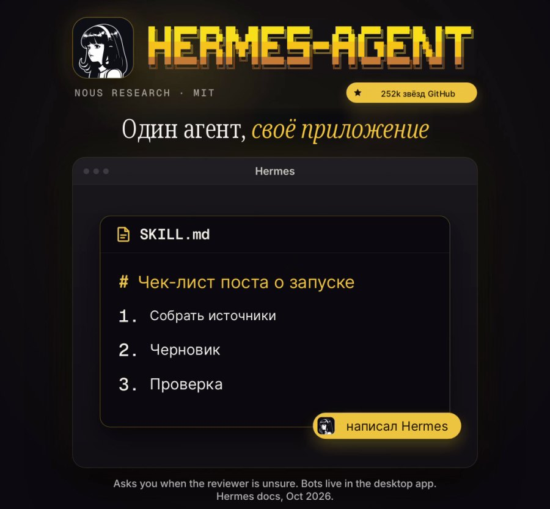
Сам пишет себе навыки, а опасные команды проверяет второй ИИ
Сколько стоитПрограмма бесплатная, платишь за модель: свои ключи с оплатой за использование, бесплатные локальные модели или подписка Nous Portal (есть бесплатный тариф, Plus $20, Super $100, Ultra $200 в месяц)
ДанныеВсё лежит у тебя: память между разговорами хранится обычными текстовыми файлами. Облака под ключ нет, сервер или компьютер обеспечиваешь сам
Где сильныйРастёт вместе с тобой: чем больше задач, тем больше своих навыков. Подозрительные команды перед запуском проверяет отдельная умная проверка. Около 230 000 звёзд на GitHub за полгода
Где слабыйНастройка через файлы конфигурации, без терминала не обойтись. Нет приложения для iPhone. Если модель с оплатой за использование работает без остановки, счёт ничем не ограничен
Шестой · руководитель
MausBot: начальник над твоими агентами
Это не ещё один агент. MausBot - бесплатное приложение с открытым кодом (лицензия Apache 2.0) для Mac, Windows и Linux, которое собирает в одну команду программы Claude Code, Codex и Grok у тебя на компьютере. Бот-руководитель раздаёт задачи, каждый бот работает на той модели, которую ты выбрала: Claude на одной задаче, Codex на другой, Grok на третьей, все в одном чате. По словам автора ролика, в команду можно добавить и Hermes с OpenClaw
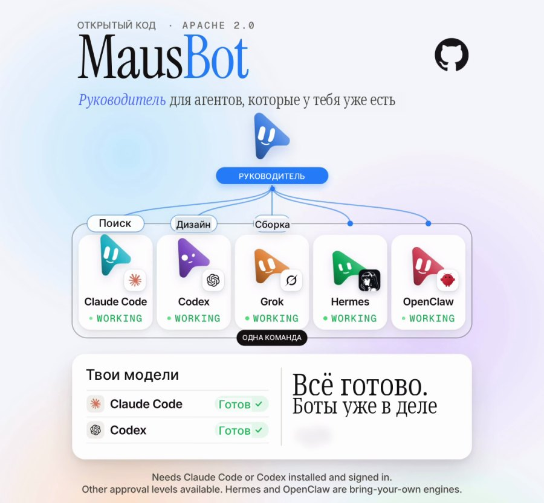
Claude Code, Codex, Grok, Hermes и OpenClaw в одной команде
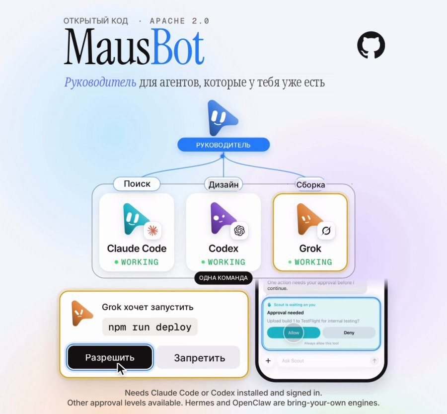
Руководитель раздаёт работу, ты подтверждаешь с компьютера или телефона
Сколько стоитСамо приложение бесплатное. Работает на твоих же подписках Claude, ChatGPT (Codex) или SuperGrok, новых аккаунтов не нужно
ДанныеОстаются на твоём компьютере, посредника между тобой и моделями нет
Где сильныйКаждая команда, правка файла и вопрос бота приходят тебе карточкой «Разрешить / Запретить». С телефона подтверждаешь через веб-версию, которая ставится как приложение. Если у тебя уже есть Claude Code или Codex, боты стартуют сразу
Где слабыйНужна хотя бы одна платная подписка и установленная программа Claude Code, Codex или Grok. Ставится через терминал. Версия для Linux пока бета
Всё на одном экране
Облачные
Dots
Muse
Grok Bot
Для чего
Рабочая задача
Личные дела
Команда ботов
Вход
$100 в месяц
Бесплатно
Подписка SuperGrok или Cursor от $20
Где работает
ChatGPT, Slack, Teams
Приложение, веб, WhatsApp
Slack и твои сервисы
Приватность
Память не почистить по частям
Просит максимум доступов
Боты видят входы друг друга
Подстраховка
Проверяющий перед каждым действием
Одноразовая карта и сторож
Подтверждения, но без отмены
Главный минус
Дорогой вход
Только США
Нет пробного режима
Открытые
OpenClaw
Hermes
MausBot
Для чего
Помощник в мессенджере
Агент, который учится
Команда из твоих агентов
Вход
Бесплатно + модель и хостинг $30-60
Бесплатно + модель
Бесплатно + твоя подписка Claude, ChatGPT или SuperGrok
Коротко: Dots ведёт задачу, Muse ведёт быт, Grok собирает отдел, OpenClaw сидит в мессенджере, Hermes учится, MausBot руководит всеми
Какой выбрать
1
Ты уже работаешь в ChatGPT
Dots. Если один проект надо вести каждый день и не держать всё в голове. Но только если $100 в месяц окупаются
2
Хочешь разгрузить быт
Muse. Брони, покупки, анкеты и напоминания. Давай доступы по одному и не подключай всё сразу
3
У тебя есть команда или поток рутины
Grok Bot. Продажи, реклама, разбор заявок. Сначала дай ботам задачи, где ошибка ничего не стоит
4
Хочешь писать агенту в Телеграм
OpenClaw. Только навыки ставь от проверенных авторов и сразу включи подтверждение команд
5
Нужен помощник, который растёт с тобой
Hermes. Если не боишься терминала и готова следить за расходом на модель
6
У тебя уже есть Claude Code или Codex
MausBot. Собери из них команду с руководителем и подтверждай работу с телефона
Из России ни одного из облачных не оплатить российской картой, а Muse пока открыт только в США. Открытые ставятся бесплатно, но модель для них тоже придётся оплачивать
Ещё две альтернативы
Claude Cowork · Anthropic
Агент внутри Claude, входит в любую платную подписку: Pro от $20, Max от $100. Самая предсказуемая цена из всех. Я сама работаю в Claude каждый день
Microsoft 365 Copilot
Для тех, кто живёт в Word, Excel и Outlook. Лицензия $30 за человека в месяц плюс оплата за каждое действие: лёгкая задача примерно $1-3
Грабли, о которые спотыкаются
Дать все доступы в первый день. Агент работает в твоей почте и платежах. Начни с одной задачи и одного сервиса
Ждать, что агент сам знает правила. Что можно делать без спроса, а что нет, пропиши словами. У Grok Bot это вообще единственный способ
Проверять на живых клиентах. Тестового режима нет ни у кого. Первые задачи - черновики, которые ты сначала читаешь
Ставить чужие навыки не глядя. В открытых каталогах навыков уже находили вредоносные. Ставь только от авторов, которым доверяешь
Вставлять пароли в чат. Пароль, вставленный в переписку или документ, агент видит открытым текстом
Иллюстрации - кадры из роликов @sanjai.builds и @buildwithomkar про ИИ-агентов. Цены и условия на 14 октября 2026, они меняются почти каждую неделю
Агент - это сотрудник, а не волшебная кнопка
Я одна, в декрете, без команды. Вместо штата у меня свои ИИ-помощники: один ведёт календарь и время, второй считает деньги, третий ищет клиентов. Ни один из них не работает сам по себе: каждый знает мои правила, мои продукты и что ему нельзя трогать
1.5млн ₽ оборота проектов за год на нейросетях, с нуля, из декрета, без команды
Блог растёт на контент-заводе из ИИ-агентов
Мой блог ведут ИИ-агенты: находят темы, которые уже залетели, пишут сценарии, собирают рилсы с цифровым двойником и выдают материалы по кодовым словам. Я проверяю и принимаю решения
Профессиональная панель: 4,6 млн просмотров за 30 днейСтатистика профиля: 4,3 млн просмотров, 89,4 тыс. взаимодействий, 1 301 новый подписчик
Три рилса по миллиону просмотров и больше, без рекламы и без команды
Растут деньги и аудитория клиентов
Ту же систему из нейросетей я собираю для экспертов: контент, автоворонки, боты, сайты и продажи. Дизайнер, монтажёр, таргетолог, копирайтер и менеджер по продажам в проекте не нанимались, их работу закрыли нейросети
1,2 млн ₽оборот проекта клиента за полгода
45 → 75 тыс.выросла аудитория клиента
Я понимаю, как привлечь внимание и превратить его в деньги. И делаю это с помощью нейросетей
Подписаться на агента - пять минут. Понять, какую часть твоего дня ему отдать, как описать задачу так, чтобы он не наломал дров, и как связать нескольких помощников в одну систему, которая приносит заявки и деньги, - это уже работа над твоим бизнесом
На консультации разбираю твою неделю и продукты и собираем план: какие задачи забирают ИИ-сотрудники, в каком порядке их подключать и с какого начать завтра